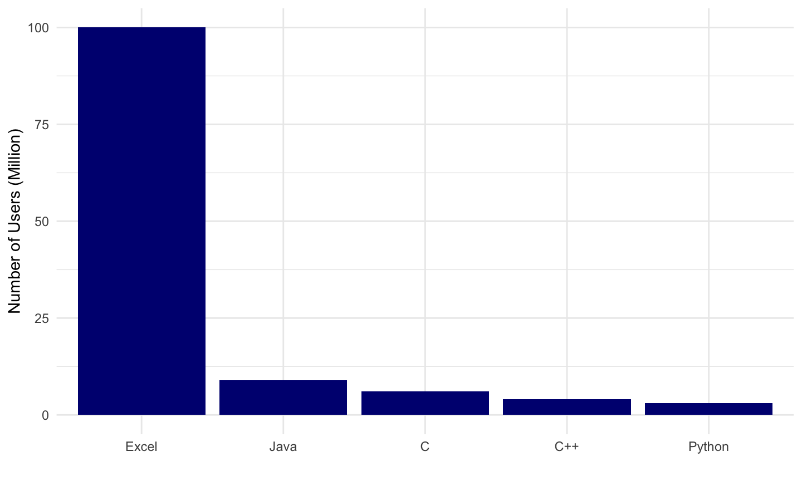

April 8-9, 2020
Watson Health/AI parable
 Photo by
Photo by commodity is new knowledge
how do you come up with a new idea?
scientific methods
- something about RCTs
Hierarchy of Knowledge Gathering

Data Science Tools
Emerging field of Data Science
 http://drewconway.com/zia/2013/3/26/the-data-science-venn-diagram
http://drewconway.com/zia/2013/3/26/the-data-science-venn-diagram
Venn Diagram of Data Science v2.0
 Joel Grus via KDnuggets
Joel Grus via KDnuggets
Overall goal is Knowledge Generation
Several Approaches to Knowledge Generation
World’s most popular programming languages

R
language
Any questions?
R is a language

R has values
- 1
- “North Carolina”
- “2020-04-08”
R has objects
- A name without quotes
- Assigned using
<-(looks like an arrow pointing left) - Can be a value, object, or function result
Try assigning an object
Assign an object; remember, no quotes on name
name <- 4Return that object by typing its name
name
Try this in the code chunk below, then hit “Run Code”
R has functions
- A name without quotes
- Followed by () to run the function
- Optional arguements: values, objects, or function results
round(x, digits = 3)
Try this in the code chunk below, then hit “Run Code”
round(pi, digits = 3)
Which one of these are numbers?
Which of these will work?
Suppose one <- 1
one <- 1
Data are stored in tables and dataframes
Data stored in a dataframe are conceptually equivalent to a spreadsheet with rows and columns
This is a sample from the heart dataset
| patient_id | age | sex | cp | trestbps |
|---|---|---|---|---|
| 1 | 52 | male | 0 | 125 |
| 2 | 53 | male | 0 | 140 |
| 3 | 70 | male | 0 | 145 |
| 4 | 61 | male | 0 | 148 |
| 5 | 62 | female | 0 | 138 |
Data are stored in tables and dataframes
Data stored in a dataframe are conceptually equivalent to a spreadsheet with rows and columns
This is a sample from the heart dataset
## # A tibble: 5 x 5 ## patient_id age sex cp trestbps ## <int> <dbl> <chr> <dbl> <dbl> ## 1 1 52 male 0 125 ## 2 2 53 male 0 140 ## 3 3 70 male 0 145 ## 4 4 61 male 0 148 ## 5 5 62 female 0 138
Extract or create new objects
You can call a single part of the data frame
heart$thalach
## # A tibble: 1,025 x 1 ## thalach ## <dbl> ## 1 168 ## 2 155 ## 3 125 ## 4 161 ## 5 106 ## 6 122 ## 7 140 ## 8 145 ## 9 144 ## 10 116 ## # … with 1,015 more rows
Extract or create new objects
Write the R code required to extract a variable from the heart dataset:
Remember, the format is: heart$thalach
Extract or create new objects
You can also save a part of the dataframe as an object for later use
thalach <- heart$thalach
In the code chunk below:
1. On the first line, write the R code to save a single column to a new object
2. On the second line, type the object name #this will print out the new object
3. Run the code
R
Integrated Developer Environment
Any questions?
R

Rstudio
Integrated Developer Environment

Rstudio Demonstration
Go to code/
Open 01_r_demo.Rmd
Follow along.
R
Markdown
Any questions?
R Markdown Introduction
Go to code/
Open 02_rmd_exercise.Rmd
Read through the file and do everything it tells you to do.
R Markdown
An authoring format for Data Science.
R
Packages
Any questions?
R Packages
The R language contains thousands of functions, data sets, and help pages.
- but only a few hundred are included when you download R
This is called ‘Base R’
The other functions, data sets, and help pages are grouped into collections known as packages that you can choose to download or not download.
“Verbs” (i.e. functions) act on data
do_this(to_that)
do_this(to_that, using_these)
We talked about functions before (e.g. round(pi, 3))
Functions are the power of using R
Packages contain functions, documentation, data
CRAN
- Most R packages are stored on CRAN, alongside R.
- Think of them as optional extensions of the R language.
 Image by daroczig
Image by daroczig
Using Packages (Part I)
install.packages("tidyverse")
Do this 1 time per computer.
This command will install the package into your instance of R, whether it is local, on a server, or in the cloud. This is required to use the functions in a package.
Tidyverse
Tidyverse Pop Quiz!
The tidyverse contains the following packages (ggplot2, dplyr, tidyr, readr, purrr, tibble, hms, stringr, lubridate, forcats, DBI, haven, httr, jsonlite, readxl, rvest, xml2, modelr, tidyverse).
How would you install them?
Tidyverse Pop Quiz!
install.packages("ggplot2") install.packages("dplyr") install.packages("tidyr") install.packages("readr") install.packages("purrr") install.packages("tibble") install.packages("hms") install.packages("stringr") install.packages("lubridate") install.packages("forcats") install.packages("DBI") install.packages("haven") install.packages("httr") install.packages("jsonlite") install.packages("readxl") install.packages("rvest") install.packages("xml2") install.packages("modelr") install.packages("broom")
Better:install.packages("tidyverse")
An R package that serves as a short cut for installing and loading the components of the tidyverse.
Using Packages (Part II)
1.install.packages("tidyverse")
Do this 1 time per computer.
2.library(tidyverse)
Do this 1 time per session
Using Packages (Part II)
Downloading a package isn’t the same as using it.
If you’d like to use an R package, you need to tell R.
You do that by running the command library, again followed by parentheses and the package name.
library(package_name)
This command loads all of the functions, data sets, and help pages that come with the package into your R session, where you can use them.
If you close R, you’ll need to reload the package with library() if you want to use it again.
Using Packages (Part III)
The setup chunk is always run once before anything else

Set-up Chunk Exercise
Add a setup chunk (as shown below) to the top of 02_rmd_exercise.Rmd.
Use it to load the tidyverse package (remember to run this chunk)
Then uncomment and run the final code chunk at the bottom of your file.

Tidyverse
Tidyverse is one suite of tools for data science
Exploratory Data Analysis

Tidyverse Basic Principles
IMPORT (readr):
- read_csv()
- read_delim()
TIDY & TRANSFORM (dplyr):
- mutate() adds new variables that are functions of existing variables
- select() picks variables based on their names.
- filter() picks cases based on their values.
- summarise() reduces multiple values down to a single summary.
- arrange() changes the ordering of the rows.
VISUALISE (ggplot): creating graphics, based on ‘The Grammar of Graphics’
- aes()
- geom_x() + layers
MODEL (broom):
- tidy(), glance(), augment()

magrittr package

magrittr package
magrittr package by Stefan Milton Bache developed the concept of the pipe, which is used heavily in the tidyverse

The Pipe
The “pipe” is a sequence of functions, that are sequentially applied to an object
wakeup(self) %>%
put_on("clothes") %>%
eat("breakfast") %>%
go(to = "work")
Alternative nested code:
go(eat(put_on(wakeup(self), "clothes"), "breakfast"), to = "work")
The Pipe (Quiz I)
What does this code do?
wakeup(self) %>%
put_on("clothes") %>%
eat("breakfast") %>%
fmk() %>%
go(to = "work")
The Pipe (Quiz II)
What does this code do?
morning_routine <- wakeup(self) %>%
put_on("clothes") %>%
eat("breakfast") %>%
fmk() %>%
go(to = "work")
The Pipe (Quiz III)
What does this code do?
morning_routine <- wakeup(self) %>%
put_on("clothes") %>%
eat("breakfast") %>%
fmk() %>%
go(to = "work")
The Pipe (Quiz IV)
What does this code do?
heart %>%select(age, sex) %>%group_by(sex) %>%summarize(mean(age))
Writing code IS NOT like drawing an owl

Writing code IS a step-wise process

R
Inspecting your data
Any questions?
Inspecting your dataframe
Use the dim() function to see how many rows (observations) and columns (variables) there are
dim(df_input)
## [1] 1025 15
Inspecting your dataframe
Use the glimpse() function to see what kinds of variables the dataset contains
glimpse(df_input)
## Rows: 1,025 ## Columns: 15 ## $ patient_id <int> 1, 2, 3, 4, 5, 6, 7, 8, 9, 10, 11, 12, 13, 14, 15, 16, 17,… ## $ age <dbl> 52, 53, 70, 61, 62, 58, 58, 55, 46, 54, 71, 43, 34, 51, 52… ## $ sex <chr> "male", "male", "male", "male", "female", "female", "male"… ## $ cp <dbl> 0, 0, 0, 0, 0, 0, 0, 0, 0, 0, 0, 0, 1, 0, 0, 1, 2, 0, 1, 2… ## $ trestbps <dbl> 125, 140, 145, 148, 138, 100, 114, 160, 120, 122, 112, 132… ## $ chol <dbl> 212, 203, 174, 203, 294, 248, 318, 289, 249, 286, 149, 341… ## $ fbs <dbl> 0, 1, 0, 0, 1, 0, 0, 0, 0, 0, 0, 1, 0, 0, 1, 0, 0, 0, 0, 1… ## $ restecg <dbl> 1, 0, 1, 1, 1, 0, 2, 0, 0, 0, 1, 0, 1, 1, 1, 1, 0, 0, 1, 0… ## $ thalach <dbl> 168, 155, 125, 161, 106, 122, 140, 145, 144, 116, 125, 136… ## $ exang <dbl> 0, 1, 1, 0, 0, 0, 0, 1, 0, 1, 0, 1, 0, 1, 1, 0, 0, 1, 0, 0… ## $ oldpeak <dbl> 1.0, 3.1, 2.6, 0.0, 1.9, 1.0, 4.4, 0.8, 0.8, 3.2, 1.6, 3.0… ## $ slope <dbl> 2, 0, 0, 2, 1, 1, 0, 1, 2, 1, 1, 1, 2, 1, 1, 2, 2, 1, 2, 2… ## $ ca <dbl> 2, 0, 0, 1, 3, 0, 3, 1, 0, 2, 0, 0, 0, 3, 0, 0, 1, 1, 0, 0… ## $ thal <dbl> 3, 3, 3, 3, 2, 2, 1, 3, 3, 2, 2, 3, 2, 3, 0, 2, 2, 3, 2, 2… ## $ target <dbl> 0, 0, 0, 0, 0, 1, 0, 0, 0, 0, 1, 0, 1, 0, 0, 1, 1, 0, 1, 1…
Basic Data Types in R
Recall that R has different data types -
character - "a", "tidyverse"
numeric - 2, 11.5
integer - 2L (the L tells R to store this as an integer)
logical - TRUE, FALSE
complex - 1+4i
(raw)
You will also come across the double datatype. It is the same as numeric
factor. A factor is a collection of ordered character variables
Basic Data Types in R
In addition to the glimpse() function, you can use the class() function to determine the data type of a specific column
class(df$sex)
## [1] "character"
(Re)Introducing %>%
The %>% operator is a way of “chaining” together strings of commands that make reading your code easy. The following code chunk illustrates how %>% works
df_input %>%
select(sex, patient_id) %>%
filter(sex == male) %>%
head()
## # A tibble: 6 x 2 ## sex patient_id ## <chr> <int> ## 1 male 1 ## 2 male 2 ## 3 male 3 ## 4 male 4 ## 5 male 7 ## 6 male 8
(Re)Introducing %>%
The previous code chunk does the following - it takes your dataset and “pipes” it into select()
When you see %>%, think “and then”
(Re)Introducing %>%
The alternative to using %>% is running the following code
filter(select(df_input, sex, patient_id), sex == male)
Although this is only one line as opposed to three, it’s both more difficult to write and more difficult to read
R
Manipulating your data
Any questions?
Introducing dplyr
dplyr is a package that contains a suite of functions that allow you to easily manipulate a dataset
Some of the things you can do are -
select rows and columns that match specific criteria
create new variables (columns)
obtain summary statistics on individual groups within your datsets
The main verbs we will cover are select(), filter(), arrange(), mutate(), and summarise(). These all combine naturally with group_by() which allows you to perform any operation “by group”
select()
The select() verb allows you to extract specific columns from your dataset
The most basic select() is one where you comma separate a list of columns you want included
For example, if you only want to select the sex and patient_id columns, run the following code chunk
df_input %>%
select(sex, patient_id) %>%
head()
## # A tibble: 6 x 2 ## sex patient_id ## <chr> <int> ## 1 male 1 ## 2 male 2 ## 3 male 3 ## 4 male 4 ## 5 female 5 ## 6 female 6
select()
If you want to select all columns except sex, run the following
df_input %>%
select(-sex) %>%
head()
## # A tibble: 6 x 14 ## patient_id age cp trestbps chol fbs restecg thalach exang oldpeak ## <int> <dbl> <dbl> <dbl> <dbl> <dbl> <dbl> <dbl> <dbl> <dbl> ## 1 1 52 0 125 212 0 1 168 0 1 ## 2 2 53 0 140 203 1 0 155 1 3.1 ## 3 3 70 0 145 174 0 1 125 1 2.6 ## 4 4 61 0 148 203 0 1 161 0 0 ## 5 5 62 0 138 294 1 1 106 0 1.9 ## 6 6 58 0 100 248 0 0 122 0 1 ## # … with 4 more variables: slope <dbl>, ca <dbl>, thal <dbl>, target <dbl>
select()
Finally, you can provide a range of columns to return two columns and everything in between. For example
df_input %>%
select(sex:patient_id) %>%
head(1)
## # A tibble: 1 x 3 ## sex age patient_id ## <chr> <dbl> <int> ## 1 male 52 1
This code selects the following columns -
## [1] "sex" "age" "patient_id"
filter()
The filter() verb allows you to choose rows based on certain condition(s) and discard everything else
All filters are performed on some logical statement
If a row meets the condition of this statement (i.e. is true) then it gets chosen (or “filtered”). All other rows are discarded
filter()
Filtering can be performed on categorical data
df_input %>%
filter(sex == male) %>%
head(3)
## # A tibble: 3 x 15 ## patient_id age sex cp trestbps chol fbs restecg thalach exang ## <int> <dbl> <chr> <dbl> <dbl> <dbl> <dbl> <dbl> <dbl> <dbl> ## 1 1 52 male 0 125 212 0 1 168 0 ## 2 2 53 male 0 140 203 1 0 155 1 ## 3 3 70 male 0 145 174 0 1 125 1 ## # … with 5 more variables: oldpeak <dbl>, slope <dbl>, ca <dbl>, thal <dbl>, ## # target <dbl>
Note that filter() only applies to rows, and has no effect on columns
filter()
Filtering can also be performed on numerical data
For example, if you wanted to choose patient_id with a value greater than 714, you would run the following.
df_input %>%
filter(patient_id > 714) %>%
head(3)
## # A tibble: 0 x 15 ## # … with 15 variables: patient_id <int>, age <dbl>, sex <chr>, cp <dbl>, ## # trestbps <dbl>, chol <dbl>, fbs <dbl>, restecg <dbl>, thalach <dbl>, ## # exang <dbl>, oldpeak <dbl>, slope <dbl>, ca <dbl>, thal <dbl>, target <dbl>
filter()
To filter on multiple conditions, you can write a sequence of filter() commands
df_input %>%
filter(sex == male) %>%
filter(patient_id > 714) %>%
head(3)
## # A tibble: 0 x 15 ## # … with 15 variables: patient_id <int>, age <dbl>, sex <chr>, cp <dbl>, ## # trestbps <dbl>, chol <dbl>, fbs <dbl>, restecg <dbl>, thalach <dbl>, ## # exang <dbl>, oldpeak <dbl>, slope <dbl>, ca <dbl>, thal <dbl>, target <dbl>
filter()
To avoid writing multiple filter() commands, multiple logical statements can be put inside a single filter() command, separated by commas
df_input %>%
filter(sex == male, patient_id > 714) %>%
head(3)
arrange()
You can use the arrange() verb to sort rows
The input for arrange is one or many columns, and arrange() sorts the rows in ascending order i.e. from smallest to largest
For example, to sort rows from smallest to largest patient_id, run the following
df_input %>%
arrange(patient_id) %>%
head(3)
## # A tibble: 3 x 15 ## patient_id age sex cp trestbps chol fbs restecg thalach exang ## <int> <dbl> <chr> <dbl> <dbl> <dbl> <dbl> <dbl> <dbl> <dbl> ## 1 1 52 male 0 125 212 0 1 168 0 ## 2 2 53 male 0 140 203 1 0 155 1 ## 3 3 70 male 0 145 174 0 1 125 1 ## # … with 5 more variables: oldpeak <dbl>, slope <dbl>, ca <dbl>, thal <dbl>, ## # target <dbl>
arrange()
To reverse this order, use the desc() function within arrange()
df_input %>% arrange(desc(patient_id)) %>% head(3)
## # A tibble: 3 x 15 ## patient_id age sex cp trestbps chol fbs restecg thalach exang ## <int> <dbl> <chr> <dbl> <dbl> <dbl> <dbl> <dbl> <dbl> <dbl> ## 1 1025 54 male 0 120 188 0 1 113 0 ## 2 1024 50 fema… 0 110 254 0 0 159 0 ## 3 1023 47 male 0 110 275 0 0 118 1 ## # … with 5 more variables: oldpeak <dbl>, slope <dbl>, ca <dbl>, thal <dbl>, ## # target <dbl>
mutate()
The mutate() verb, unlike the ones covered so far, creates new variable(s) i.e. new column(s). For example
df_input %>%
mutate(new_col = sqrt(patient_id)) %>%
head(1)
## # A tibble: 1 x 16 ## patient_id age sex cp trestbps chol fbs restecg thalach exang ## <int> <dbl> <chr> <dbl> <dbl> <dbl> <dbl> <dbl> <dbl> <dbl> ## 1 1 52 male 0 125 212 0 1 168 0 ## # … with 6 more variables: oldpeak <dbl>, slope <dbl>, ca <dbl>, thal <dbl>, ## # target <dbl>, new_col <dbl>
The code chunk above takes all the elements of the column patient_id, evaluates the square root of each element, and populates a new column called new_col with these results
summarise()
summarise() produces a new dataframe that aggregates that values of a column based on a certain condition.
For example, to calculate the mean patient_id, run the following
df_input %>%
summarise(mean(patient_id))
## # A tibble: 1 x 1 ## `mean(patient_id)` ## <dbl> ## 1 513
group_by()
group_by() and summarise() can be used in combination to summarise by groups
df_input %>%
group_by(sex) %>%
summarise(mean(patient_id))
## # A tibble: 2 x 2 ## sex `mean(patient_id)` ## <chr> <dbl> ## 1 female 514. ## 2 male 513.
Saving a new dataset
If you’d like to save the output of your wrangling, you will need to use the <- or -> operators
df_new <- df_input %>%
group_by(sex) %>%
summarise(mean(patient_id))
To save df_new as a new file (e.g. csv), run the following
write_csv(df_new, “df_new.csv”)
R
Help
Any questions?
For more help
Run the following to access the Dplyr vignette
browseVignettes(“dplyr”)